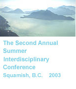
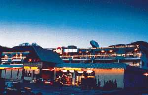
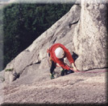
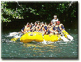

Welcome to ASIC 2003 (ASIC II)
The Second Annual Summer Interdisciplinary Conference (ASIC II) was held in Squamish, British Columbia. Richard M. Shiffrin of Indiana University-Bloomington was the conference organizer.

Squamish, British Columbia — site of ASIC II.
The conference used the very successful format of ASIC I: days are free for leisure activities and the talks are in the later afternoon/early evening. The date was chosen to make it convenient for attendees to bring family and friends. The conference was open to all interested parties, and an invitation was not needed. The subject is interdisciplinary, within the broad frame of Cognitive Science.
Invitation
The conference was open to all scholars who fit the very general theme of the conference, and their family and friends. An individual invitation was not needed — attendees were encouraged to spread the conference information to friends and colleagues.
Conference aims
The conference covered a wide range of subjects in cognitive science, including:
- neuroscience, cognitive neuroscience
- psychology (including perception, psychophysics, attention, information processing, memory and cognition)
- computer science
- machine intelligence and learning
- linguistics
- and philosophy
The conference especially invited talks emphasizing theory, mathematical modeling and computational modeling (including neural networks and artificial intelligence). Talks were required to be comprehensible and interesting to a wide scientific audience, with speakers providing overviews of current research areas as well as their own recent progress.
Conference format
The conference started with a reception on the first evening, Wednesday, August 6, at 5 PM, followed by a partial session.
Each of the next five evenings, sessions began about 4:00 PM. Drinks, light refreshments and snacks were available starting at 3:45 PM, prior to the start of the session, and at the midway break. A session consisted of 6–7 talks and a mid-session break, finishing at approximately 8:00–8:15 PM. A banquet was held following the final session of the conference.
There were no parallel sessions or presentations. A separate room, day and time was set aside for poster presentations, both for those preferring this format to a spoken presentation and for any presenters who could not be allotted speaking slots.
Correspondence
Annual Summer Interdisciplinary Conference (ASIC II)
c/o Prof. Richard Shiffrin
Psychology Department
Indiana University
1101 E. 10th St.
Bloomington, IN 47405
Email: shiffrin@indiana.edu
Registration
To attend the conference, attendees filled out a registration form and sent it, with a check for the registration fee, by regular mail.
Mailing address for the registration form and fee:
ASIC II, c/o Prof. Richard Shiffrin
Indiana University Cognitive Science Program
1101 E. 10th St.
Bloomington, IN 47405
Fee schedule (US dollars)
| Before May 1, 2003 | $140 USD |
|---|---|
| After May 1, 2003 | $155 USD |
| On-site payment | $175 USD |
All fees were payable by check (no credit cards), made out to Annual Summer Interdisciplinary Conference (or ASIC II) and sent to the organizer at the address above. Checks from attendees outside the US were drawn on a US bank, or sent as an international cashier's check or the equivalent.
Travel & Lodging
Squamish is located on Howe Sound, in the southwest corner of British Columbia — about 30 miles north of Vancouver, roughly halfway between Vancouver and the resort city of Whistler.
Most attendees flew into Vancouver International Airport. The scenic drive from the Vancouver airport took approximately 75 minutes, with rental cars, rail, bus, and limo/van service all available from Vancouver. Attendees could also fly to Seattle, though the drive to Squamish from there was substantial; a small airport in Squamish itself had taxi service available.
Lodging

Best Western Sea to Sky Hotel, Garibaldi Highlands, B.C.
The conference hotel was the Best Western Sea to Sky Hotel (40330 Tantulus Way, PO Box 310, Garibaldi Highlands, B.C. V0N 1T0), about 3 km north of the center of Squamish. The hotel had a restaurant, fitness room, sauna and jacuzzi, with several dining choices nearby. ASIC reserved the entire hotel, including a substantial number of standard rooms with two extra-long double beds, as well as several suites.
Attendees made their own reservations directly by calling 1-800-531-1530 or 1-604-898-4874, or by fax at 1-604-898-3692, mentioning ASIC for the conference rate.
| Standard (2 doubles) | Canadian $74 |
|---|---|
| Suite (1 king, 2 doubles, 1 queen pull-out) | Canadian $84 |
| 3-bed (2 doubles, 1 queen pull-out) | Call for rate |
For additional demand, or for families wanting a waterslide and pool, the Squamish Super 8 Motel — about halfway between the Sea to Sky Hotel and town — was available at rates about Canadian $10 higher. Reservations: 1-800-800-8000 (or locally 1-604-815-0883; fax 1-604-815-0884).
Inexpensive lodging was also available in the area, including camping or the Squamish Hostel.
Activities
Squamish sits amidst mountains at the tip of Howe Sound, near the mouth of the Squamish, Mamquam and other rivers — adjacent to the most famous rock climbing face in Canada, the Stawamus Chief (roughly 2,000 ft. tall).

Climbing at Squamish, adjacent to the Stawamus Chief.
Squamish is most famous for its climbing, windsurfing, fishing and mountain biking, with superb opportunities in many other sports and recreations as well.

Whitewater rafting on the rivers near Squamish.
Within easy distance of the hotel
- Golf courses
- Squash & tennis
- Kayaking & boating
- Swimming & windsurfing
- ATV tours
- Whitewater rafting
- Rock climbing & mountain climbing
- Hiking & mountain hiking
- Glacier air tours
- Fishing & horseback riding
- Wilderness adventures & underground mine exploration
- Bird watching (estuary and bald eagles)
Outfitters and area attractions mentioned on the original site included the BC Museum of Mining National Historic Site, Sea to Sky Eco Tours (ATV tours), Whistler River Adventures (rafting, fishing, jetboating), Sea to Sky Ocean Sports (kayaking, windsurfing, diving), Canadian Outback Adventure Company (whitewater rafting, heli-rafting, horseback riding), Sea to Sky Stables, the Squamish Estuary, and Furry Creek Golf and Country Club.
Contact
Email was the preferred way to reach the organizer.
Conference organizer
Richard M. Shiffrin
Indiana University – Bloomington
shiffrin@indiana.edu
Postal address
Annual Summer Interdisciplinary Conference (ASIC II)
c/o Prof. Richard Shiffrin
Psychology Department
Indiana University
1101 E. 10th St.
Bloomington, IN 47405